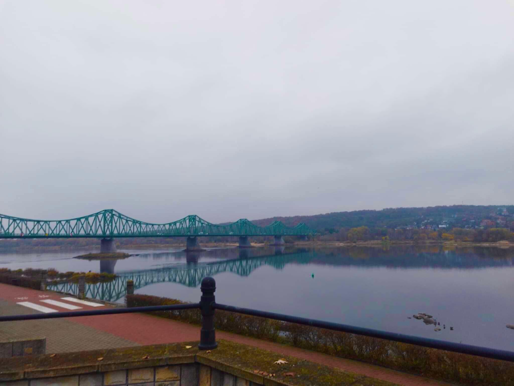

Bulwary im. Marszałka Józefa Piłsudskiego
Bulwary im. Marszałka Józefa Piłsudskiego we Włocławku – nadwiślańska ulica z promenadą, sięgająca XIX wieku, kiedy nosiła nazwy Nadbrzeżna, Bulwarowa, a po II wojnie światowej - Bulwary PZPR (1945–1989). W XIX wieku nazywana była również „Bulwarkiem”.
Dziś Bulwary pełnią rolę miejsca spotkań i wydarzeń kulturalnych jak Dni Włocławka, Festiwal Wisły, koncerty oraz Bulwary Sportu i Sztuki. Infrastruktura obejmuje plac zabaw, siłownię plenerową, ścieżki spacerowe i rowerowe, parking, tarasy widokowe oraz Pływającą Scenę na Wiśle. Bulwary znajdują się na trasie Wiślanej Trasy Rowerowej.
Historia i zabudowania:
1840 r.: Wytyczono ulicę Nadbrzeżną, początkowo piaszczystą drogę nad Wisłą.
1844-1846 r.: Ulicę wybrukowano, powstały głównie spichlerze i domy rybackie.
1853 r.: Ochrzczenie statku parowego „Włocławek”.
1887 r.: Powstanie Włocławskiego Towarzystwa Wioślarskiego.
1910 r.: Towarzystwo „Krater” rozpoczęło działalność stoczniową.
1914 r.: Zniszczenie mostu łyżwowego przez wycofujące się wojska rosyjskie.
1918 r.: Potyczka legionistów polskich z wojskiem niemieckim.
1920 r.: Bitwa polsko-bolszewicka na ulicy Bulwarowej, podczas której zniszczeniu uległy okoliczne domy.
1922 r.: Odbudowa mostu łyżwowego (rozebranego w 1938 r. po powstaniu mostu stalowego).
1930 r.: Wzniesienie pomnika Piłsudskiego, zniszczonego przez okupantów niemieckich w 1940 r.
1945-1989: Ulicy patronowała PZPR, w 1978 r. odsłonięto Pomnik Ludziom Pracy.
Lata 2010-2011: Modernizacja Bulwarów, dodano tarasy widokowe i inne udogodnienia.
2013 r.: Budowa Pływającej Sceny oraz kładki łączącej oba brzegi rzeki Zgłowiączki.
Zabudowania historyczne: Wzdłuż Bulwarów zachowało się wiele zabytkowych budowli, w tym Zespół Szkół Chemicznych, Spichlerz Muzeum Ziemi Kujawskiej i Dobrzyńskiej, Pałac Biskupi z XIV wieku i budynki mieszkalne z XIX i XX wieku.
Źródło
